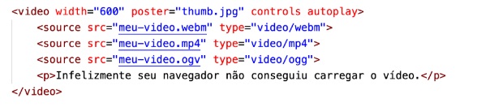
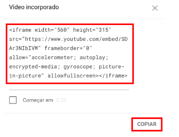

Para inserir vídeo em nosso site podemos utilizar a tag <video>, caso o arquivo esteja hospedado
em nosso próprio servidor.
O código ficará dessa forma:
Vamos analisar os principais atributos da tag <video>:
Oa formatos suportados pelos navegadores são MPEG, WEBM e OGG,
mas os dois primeiros são os que possuem maior compatibilidade com os navegadores atualmente.
O resultado visual do nosso código para hospedar o vídeo será esse:
Alguns sites de reprodução de videos fornecem códigos em HTML para incorporá-los em seu site. exemplo:
O resultado visual será esse: